AUTOMATIC TRANSMISSION ASSEMBLY (for 2UZ-FE) > INSTALLATION |
| 1. INSTALL TORQUE CONVERTER CLUTCH ASSEMBLY |
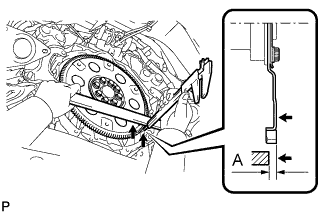 |
Using a vernier caliper and straightedge, measure dimension A between the end surface of the engine and the torque converter contact surface of the drive plate.
Install the torque converter clutch to the transmission housing.
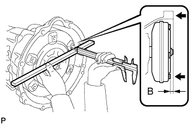 |
Using a vernier caliper and straightedge, measure dimension B shown in the illustration and check that B is more than A measured in the first step.
| 2. INSTALL TRANSFER ASSEMBLY |
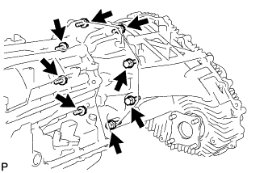 |
Install the transfer with the 8 bolts.
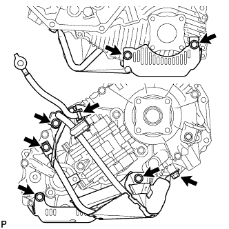 |
Install the transfer case lower protector with the 7 bolts.
Connect the cable of the ground cable to the transfer case lower protector.
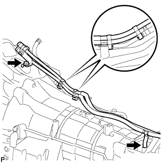 |
Attach the 2 breather hose clamps to connect the transfer breather hose to the automatic transmission breather tube, and install the bolt.
| 3. INSTALL HARNESS CLAMP BRACKET |
Install the front left bank bracket with the bolt.
Install the rear left bank bracket with the bolt.
w/o Air Cooled Transmission Oil Cooler:
Install the front right bank bracket with the bolt.
Install the rear right bank bracket with the bolt.
| 4. INSTALL AUTOMATIC TRANSMISSION ASSEMBLY |
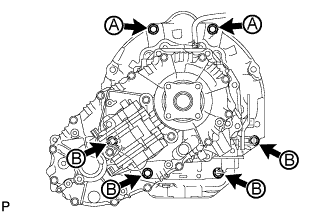 |
Install the transmission with the 6 bolts.
| 5. INSTALL MANIFOLD STAY |
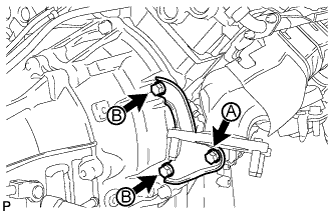 |
Install the manifold stay with the 3 bolts.
| 6. INSTALL NO. 2 MANIFOLD STAY |
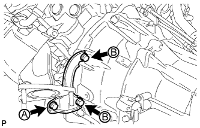 |
Install the manifold stay with the 3 bolts.
| 7. INSTALL TRANSMISSION OIL COOLER ASSEMBLY (w/o Air Cooled Transmission Oil Cooler) |
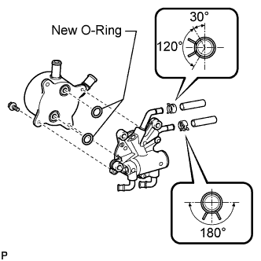 |
Coat 2 new O-rings with ATF, and install them to the transmission oil cooler.
Align the transmission oil cooler with the transmission oil thermostat and assemble them with the 3 bolts.
Connect the 2 oil cooler hoses to the transmission oil thermostat with the 2 clips.
Temporarily install the transmission oil cooler with the transmission oil thermostat with bolt A. Install bolt B and tighten it to the specified torque. Then tighten bolt A to the specified torque.
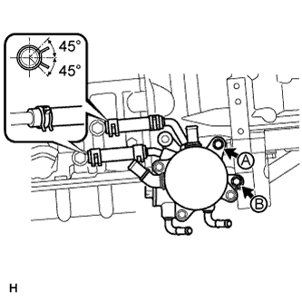 |
Connect the 2 hoses with the 2 clips.
| 8. CONNECT NO. 2 WATER BY-PASS PIPE (w/o Air Cooled Transmission Oil Cooler) |
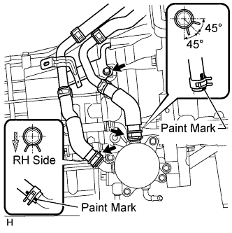 |
Connect the 2 water by-pass hoses with the 2 clips and connect the water by-pass pipe with the bolt.
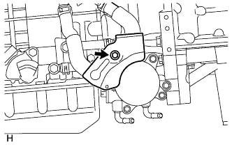 |
Install the hose heat protector with the bolt.
| 9. CONNECT TRANSMISSION OIL COOLER HOSE (w/o Air Cooled Transmission Oil Cooler) |
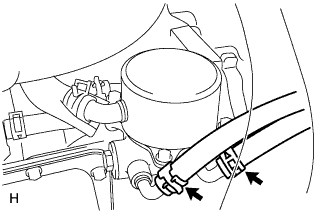 |
Connect the 2 oil cooler hoses to the transmission oil thermostat.
| 10. CONNECT TRANSMISSION OIL COOLER HOSE (w/ Air Cooled Transmission Oil Cooler) |
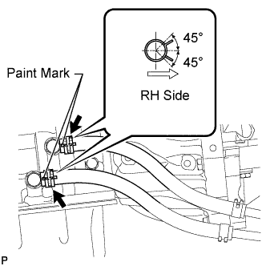 |
Connect the 2 transmission oil cooler hoses to the transmission.
| 11. CONNECT WIRE HARNESS AND CONNECTOR |
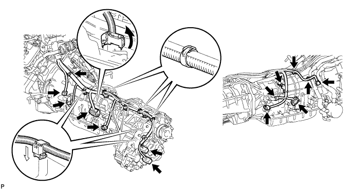
Connect the park/neutral position switch connector, transmission wire connector, 2 speed sensor connectors and 2 transfer control side connectors.
Connect the wire harness with the bolt.
Connect the 4 connector clamps and 7 harness clamps.
Tilt up the automatic transmission.
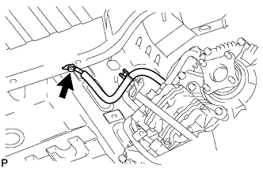 |
Connect the ground cable with the bolt.
| 12. INSTALL REAR NO. 1 ENGINE MOUNTING INSULATOR |
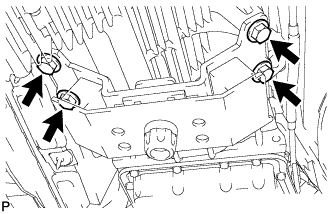 |
Install the rear engine mounting insulator to the transmission with the 4 bolts.
| 13. INSTALL NO. 2 FRAME CROSSMEMBER SUB-ASSEMBLY |
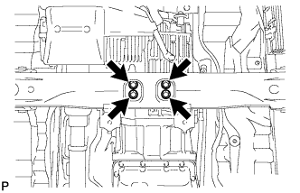 |
Install the frame crossmember to the rear engine mounting insulator with the 4 bolts.
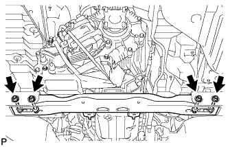 |
Install the frame crossmember to the frame with the 4 bolts and 4 nuts.
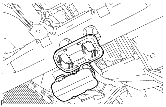 |
Install the engine mounting hole cover.
| 14. INSTALL DRIVE PLATE AND TORQUE CONVERTER CLUTCH SETTING BOLT |
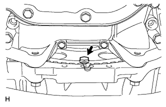 |
Turn the crankshaft to gain access to the installation location of the 6 bolts and install each bolt while holding the crankshaft pulley setting bolt with a wrench.
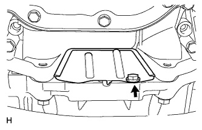 |
Install the flywheel housing under cover with the bolt.
| 15. CONNECT FLOOR SHIFT GEAR SHIFTING ROD SUB-ASSEMBLY |
 |
Connect the gear shifting rod to the transmission control shaft lever RH with a new clip and pin.
| 16. INSTALL FRONT EXHAUST PIPE ASSEMBLY |
Install a new gasket and the front exhaust pipe to the exhaust manifold with 3 new nuts.
Connect the air fuel ratio sensor connector.
Connect the heated oxygen sensor connector.
Attach the heated oxygen sensor wire clamp.
| 17. INSTALL FRONT NO. 2 EXHAUST PIPE ASSEMBLY |
Install a new gasket and the front No. 2 exhaust pipe to the exhaust manifold LH with 3 new nuts.
Connect the air fuel ratio sensor connector.
Connect the heated oxygen sensor connector.
| 18. INSTALL CENTER EXHAUST PIPE ASSEMBLY |
Install the center exhaust pipe to the 3 exhaust pipe supports.
Install 2 new gaskets to the front exhaust pipe and front No. 2 exhaust pipe.
Install the 4 bolts.
| 19. INSTALL TAILPIPE ASSEMBLY |
Install the tailpipe to the 2 exhaust pipe supports.
Install a new gasket to the center exhaust pipe.
 |
Connect the tailpipe and center exhaust pipe with a new clamp.
| 20. INSTALL PROPELLER SHAFT ASSEMBLY |
Install the propeller shaft (Click here).
| 21. INSTALL FRONT PROPELLER SHAFT ASSEMBLY |
Install the front propeller shaft (Click here).
| 22. CONNECT CABLE TO NEGATIVE BATTERY TERMINAL |
| 23. ADD ENGINE COOLANT (w/o Air Cooled Transmission Oil Cooler) |
Add engine coolant.
| Item | Specified Condition | |
| w/o Transmission oil cooler | w/o Rear Heater | 13.4 liters (14.2 US qts, 11.8 Imp. qts) |
| w/ Rear Heater | 16.3 liters (17.2 US qts, 14.3 Imp. qts) | |
| w/ Transmission oil cooler | w/o Rear Heater | 14.1 liters (14.9 US qts, 12.4 Imp. qts) |
| w/ Rear Heater | 16.9 liters (17.9 US qts, 14.9 Imp. qts) | |
 |
Slowly pour coolant into the radiator reservoir until it reaches the F line.
Install the radiator reservoir cap.
Press the inlet and outlet radiator hoses several times by hand, and then check the coolant level. If the coolant level is low, add coolant.
Install the radiator cap.
Start the engine and warm it up until the thermostat opens.
Maintain the engine speed at 2000 to 2500 rpm.
Press the inlet and outlet radiator hoses several times by hand to bleed air.
Stop the engine, and wait until the engine coolant cools down to the ambient temperature.
 |
Check that the coolant level is between the F and L lines. If the coolant level is below the L line, repeat all of the procedures above. If the coolant level is above the F line, drain coolant so that the coolant level is between the F and L lines.
| 24. INSPECT FOR COOLANT LEAK (w/o Air Cooled Transmission Oil Cooler) |
 |
Fill the radiator with coolant and attach a radiator cap tester.
Warm up the engine.
Using the radiator cap tester, increase the pressure inside the radiator to 123 kPa (1.3 kgf/cm2, 18 psi), and check that the pressure does not drop.
If the pressure drops, check the hoses, radiator and water pump for leaks. If no external leaks are found, check the heater core, cylinder block and head.
| 25. ADD AUTOMATIC TRANSMISSION FLUID |
Add automatic transmission fluid (Click here).
| 26. INSPECT SHIFT LEVER POSITION |
When moving the shift lever from P to R with the engine switch on (IG) and the brake pedal depressed, make sure that it moves smoothly and correctly into position.
Check that the shift lever does not stop when moving the shift lever from R to P, and check that the shift lever does not stick when moving the shift lever from D to S.
Start the engine and make sure that the vehicle moves forward after moving the shift lever from N to D and moves rearward after moving the shift lever to R.
If there are no problems during the above inspections, perform the adjustment using the following procedures.
Move the shift lever to N
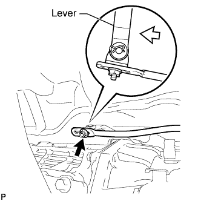 |
Loosen the nut of the floor shift gear shifting rod. Then, with the lever of the floor shift assembly lightly pushed towards the rear of the vehicle, tighten the nut.
| 27. INSPECT FOR EXHAUST GAS LEAK |
| 28. INSTALL NO. 1 ENGINE UNDER COVER |
 |
Install the under cover with the 6 bolts.
| 29. INSTALL NO. 2 ENGINE UNDER COVER |
 |
Install the under cover with the 6 bolts.
| 30. INSTALL FRONT FENDER SPLASH SHIELD SUB-ASSEMBLY LH |
 |
Push in the clip indicated by the arrow in the illustration to install the fender splash shield.
Install the 3 bolts and screw.
| 31. INSTALL FRONT FENDER SPLASH SHIELD SUB-ASSEMBLY RH |
| 32. RESET MEMORY |
Perform the Reset Memory procedures (A/T initialization) (Click here).